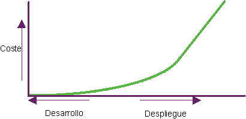

| Gestión de la calidad |
 |
|
| Elementos relacionados |
|---|
|
 Los problemas de software son mucho más difíciles de localizar y reparar después del despliegue. La verificación y gestión de la calidad durante el ciclo vital del proyecto son fundamentales para conseguir los objetivos adecuados en el momento indicado. ¿Qué quiere decir verificación de la calidad durante el ciclo vital?Es importante valorar la calidad de todos los artefactos en diversos puntos del ciclo vital del proyecto a medida que maduran. Los artefactos deben evaluarse a medida que las actividades que los generan se van completando y al final de cada iteración. En concreto, una vez creado el software ejecutable, debería someterse a demostración y prueba de escenarios importantes en cada iteración, lo que proporciona una comprensión más tangible de las limitaciones del diseño y la eliminación anterior de defectos de arquitectura. Este procedimiento contrasta con el más tradicional que retrasa la prueba del software integrado a un momento posterior en el ciclo vital del proyecto. ¿Cuál es la definición de calidad?IntroducciónCalidad es lo que todos perseguimos en nuestros productos, procesos y servicios. Sin embargo, cuando se pregunta, "¿Qué es calidad?", cada uno tiene una opinión distinta. Entre las respuestas comunes recogidas se encuentran las siguientes:
Quizá el comentario más oído acerca de la calidad, sobre todo en software, es la falta de ella:
Estas respuestas frecuentes son significativas, pero ofrecen poco margen para examinar la calidad de forma rigurosa y poder mejorar. Todos estos comentarios ilustran la necesidad de definir calidad de forma que pueda medirse y conseguirse. La calidad no es una característica o atributo singular. Es multidimensional y puede decirse que un producto o proceso es de calidad. La calidad de un producto implica la creación del producto adecuado, y la calidad del proceso se centra en la creación correcta del producto. Consulte Concepto: Calidad del producto y Concepto: Calidad del proceso para obtener información adicional. Definición de calidadSegún el diccionario The American Heritage Dictionary of the English Language, 3ª edición, Houghton Mifflin Co.,© 1992, 1996, la definición de calidad es:
Según esta definición, calidad consta de numerosas dimensiones. Para aplicar esta definición al desarrollo de software, es necesario adaptarla. Por lo tanto, en relación con Rational Unified Process (RUP), calidad se define de la siguiente manera:
Por lo tanto, obtener calidad no es sólo "cumplir requisitos" o crear un producto que cumpla las necesidades y las expectativas del usuario. Obtener calidad incluye la identificación de medidas y criterios que demuestran que se ha conseguido calidad, y la implementación de un proceso que garantice que el producto creado por el proceso ha conseguido el grado de calidad deseado, que puede repetirse y gestionarse. Consulte las páginas siguientes para obtener información adicional acerca de cómo RUP define la idea de calidad:
¿Quién es responsable de la calidad?Existe la creencia errónea de que la calidad es responsabilidad de un grupo. Este mito se perpetúa con la creación de un grupo, a veces llamado QA (otros nombres son Control de calidad, Prueba e Ingeniería de la calidad), responsable de la calidad. La calidad es, y debería ser, responsabilidad de todos. Obtener calidad debe formar parte integral de todas las actividades del proceso, en lugar de ser una disciplina independiente. De este modo, todos son responsables de la calidad de los productos (o artefactos) que se crean y de la implementación del proceso. Cada rol contribuye a la obtención de calidad de las siguientes maneras:
Todos comparten la responsabilidad y la satisfacción de obtener un producto de alta calidad, o la insatisfacción de crear un producto de baja calidad. Pero sólo los que están involucrados directamente en un componente del proceso específico son responsables de la satisfacción o de la insatisfacción relacionada con la calidad de los componentes del proceso (y los artefactos). Alguien, no obstante, debe ser el responsable de la gestión de la calidad, es decir, de supervisar el proceso para garantizar que la calidad se está gestionando, midiendo y que se ha obtenido. El rol responsable de la gestión de la calidad es el gestor de proyectos. Creencias erróneas sobre la calidadExisten muchas creencias erróneas con respecto a la calidad, y algunas comunes son las siguientes:
La calidad se puede añadir a un producto o se puede probar la calidad de ésteDe la misma manera que un producto no puede crearse si no va acompañado de una descripción, de información acerca de para qué sirve, quién lo utiliza, cómo se utiliza, etc., no se puede obtener calidad si ésta no se describe, se mide y forma parte del proceso de creación del producto. Consulte Concepto: Medida de la calidad y la sección de este documento titulada La calidad sucede por sí misma. La calidad es un atributo o característica, de una sola dimensión, que significa lo mismo para todosLa calidad no es un atributo o característica de una sola dimensión. La calidad se mide de muchas maneras; para cumplir las necesidades del proyecto, empresa y clientes se establecen métricas y criterios de calidad. La calidad puede medirse de acuerdo con varias dimensiones, algunas se aplican a la calidad del proceso, otras a la calidad del producto y otras a las dos. La calidad puede medirse para comprobar lo siguiente:
Consulte Concepto: Dimensiones de calidad, Concepto: Calidad del producto y Concepto: Calidad del proceso para obtener información adicional. La calidad sucede por sí mismaLa calidad no puede suceder por sí misma. Para conseguir productos de calidad, debe implementarse, adherirse y medirse un proceso. RUP proporciona un enfoque organizado a la asignación de tareas y responsabilidades dentro de la empresa de desarrollo. El objetivo es garantizar la producción de software de gran calidad que cumpla las necesidades de los usuarios dentro de una planificación y presupuesto previsibles. RUP recoge muchas de las recomendaciones del desarrollo moderno de software de modo que puedan adaptarse a una amplia gama de proyectos y empresas. La disciplina de entorno contiene instrucciones sobre la mejor manera de configurar el proceso de acuerdo con sus necesidades. Los procesos pueden configurarse y la calidad (los criterios de aceptabilidad) puede negociarse en función de diversos factores. Los factores más comunes son:
Los cambios en el proceso y en los criterios de aceptabilidad deben realizarse y acordarse al inicio del proyecto. Gestión de calidad en RUPEl objetivo de la gestión de la calidad es:
La gestión de la calidad se implementa en todas las disciplinas, flujos de trabajo, fases e iteraciones de RUP. En general, la gestión de la calidad durante el ciclo vital significa implementar, medir y valorar tanto la calidad del proceso como la calidad del producto. Algunos de estos esfuerzos empleados en la gestión de la calidad en cada disciplina se resaltan en la lista siguiente:
|
© Copyright IBM Corp. 1987, 2006. Reservados todos los derechos. |